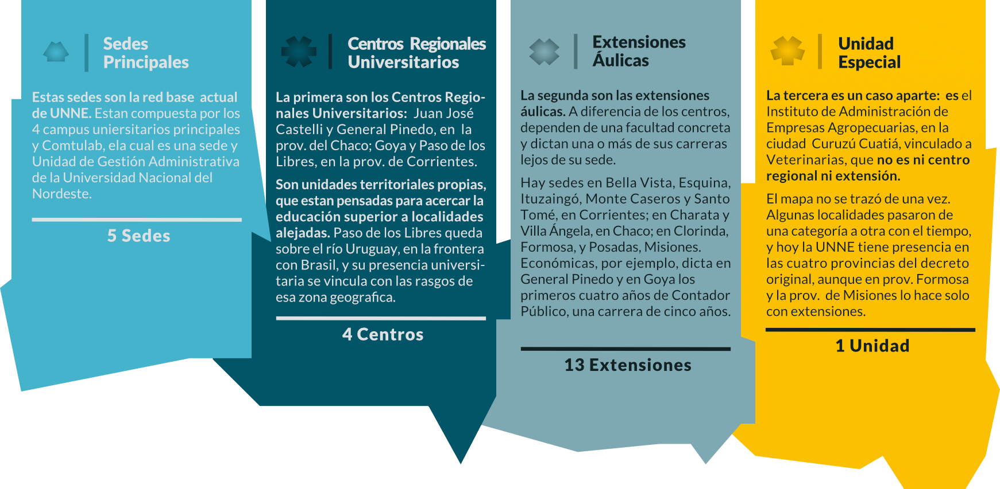
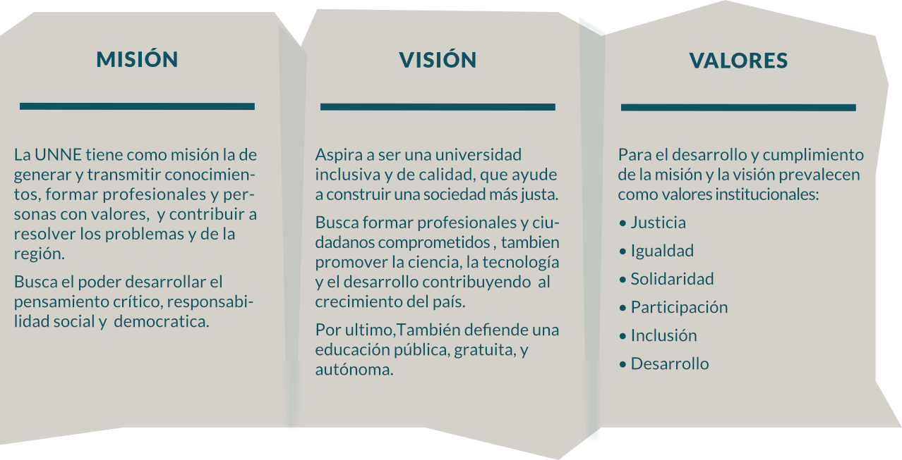
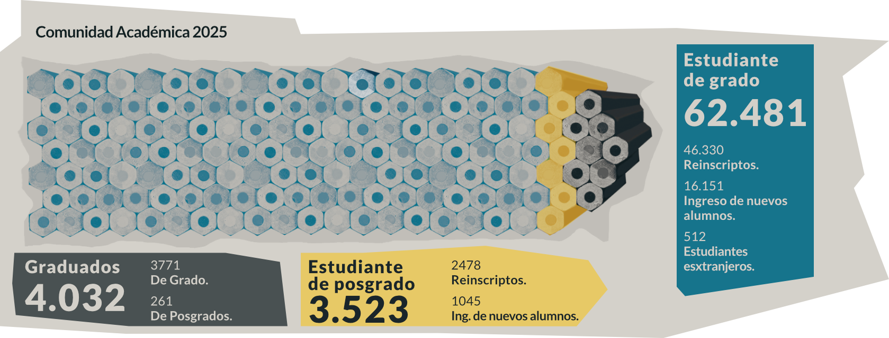
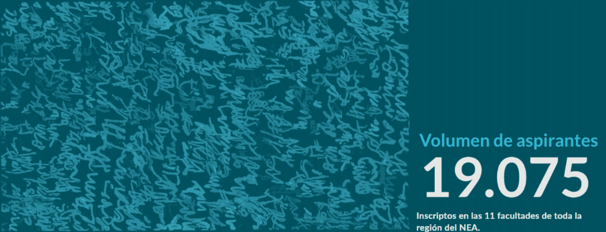

Estudiar sin mudarse
Hace 70 años, la UNNE nació para acercar la universidad a una región que la necesitaba.
Cuando el decreto de 1956 creó la
Universidad Nacional del Nordeste,
no se hablaba de dos ciudades, sino de cuatro provincias:
Chaco, Corrientes, Formosa y Misiones.
Su objetivo era claro: evitar que los jóvenes tuvieran que abandonar su lugar de origen para acceder a estudios universitarios.
Con el tiempo, su núcleo quedó repartido entre Corrientes y Resistencia, con dos campus en cada ciudad capital.
Esa red es la base desde la que la UNNE salió después hacia múltiples ciudades del nordeste argentino
y dio forma a su perfil regional con diversas modalidades.

La UNNE no solo transmite conocimientos, sino que plantea formación personal con ética, pensamiento crítico y compromiso social. Esto se transmite a través de sus pilares institucionales principales.
Porque la educación no es únicamente enseñar. También es transformar realidades.


La presencia de la UNNE puede verse reflejada a través de las personas que forman parte de ella.
El presente informe constituye una herramienta fundamental de transparencia y gestión institucional, permitiendo una lectura cuantitativa del volumen de la UNNE 2025.

Análisis cuantitativo de la cantidad de estudiantes que superan las diferentes etapas del universitario, desde su ingreso como aspirante, su continuidad o reinscripción para seguir la trayectoria, hasta su graduación.

Porque la UNNE sigue escribiéndose en cada estudiante, docente, graduado y ciudadano que encuentra en ella una oportunidad para crecer.
Y porque, cada aula, cada proyecto y cada historia personal son parte de una misión que trasciende generaciones: acercar educación, conocimiento y futuro a toda la región.